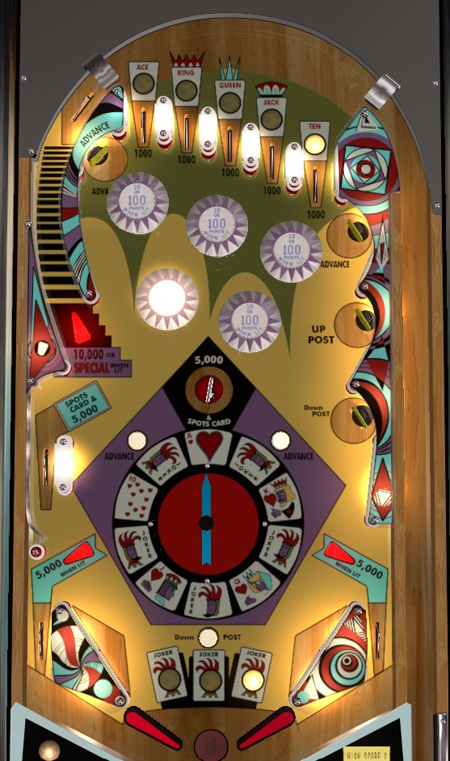

Straight Flush is the replay version. 3 Jokers is the add-a-ball version. The only difference between the two is that Straight Flush can make specials worth a free game, an extra ball, or 100,000 points; 3 Jokers only allows the extra ball and 100,000 points options.
Plunge into a top lane that you don't have yet to collect playing cards. From the right flipper, always shoot the left orbit to get back to the top lanes. From the left flipper, if the center post is not raised, aim for the Up Post target in the upper right, and hope the ball doesn't trigger a Down Post button on the way back down; if the ball is on the left flipper with a raised center post, use very tiny flips to transfer the ball to the right flipper for an orbit shot.
The top lanes correspond to Ace-King-Queen-Jack-10 playing cards. Roll through a lit lane to collect that card, which unlights the lane. Top lanes score 1,000 points whether lit or not. Collecting a card lights a pop bumper for 100 points instead of 10. Collecting the Ace or 10 cards also light the left and right out lane, respectively, for 5,000 points instead of 1,000. Collecting all 5 cards resets the card sequence and scores a Special, which can be worth a free game, an extra ball, or 100,000 points.
The upper left and upper right standup targets labelled Advance will rotate the arrow in the center of the playfield. The middle left side lane and center saucer score 5,000 points and award whatever card the arrow is pointing towards. There are 10 positions the arrow can be in: 5 of them correspond to the Ace-King-Queen-Jack-10 cards, and the other 5 are all Jokers. Collecting a total of 3 Jokers over the course of the game scores an instant extra ball (or 100,000 points).
On physical copies of the machine, playing cards and jokers are carried over from ball to ball. On the VPX virtual recreation, playing cards are reset each ball, making the game exponentially harder, though jokers are still preserved. On all versions, tilting the game causes the loss of the current ball in play and all jokers, but does not take away an additional ball like Gottlieb add-a-ball games do. Multiple extra balls can be earned per ball in play, with a maximum of 10 balls remaining at any given time.
The left orbit always scores 10,000 points. It is also lit for Special intermittently, about 20% of the time, based on 100-point switch hits. As stated above, this special can score a free game, an extra ball, or 100,000 points. I would expect that the same setting governs both this special and the Straight Flush award special.
Is raised by the upper right Up Post target, and lowered by the middle right Down Post target and the rollover button very close to the flippers. Never expect the post to be up when the ball is approaching the flippers, as the Down Post rollover button is so close to the bottom of the table that there's almost no time to react to the ball pressing it.
There are no in lanes. Flippers back up directly to the slingshots. Out lanes score 1,000 points, or 5,000 when lit after the Ace and 10 have been collected for left and right respectively. Full size three inch flippers are used. There are no kickbacks or out lane gates. There is no end of ball bonus.